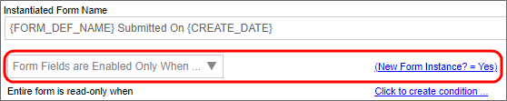
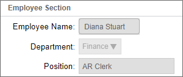
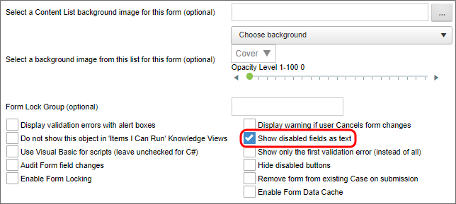
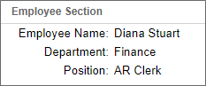

Any time you create a Process Director Form, you should think carefully about when controls should be enabled or disabled, or when they should be shown or hidden. Most of the time, for instance, the majority of controls will need to be disabled after the initial user fills out the form. Or perhaps the form might contain controls that only managers can see, and which should be hidden from other users. In general, you should ask yourself some questions about visibility and enabling scenarios:
You should also remember how enabled and visibility settings are inherited in Process Director, which is that the setting at the lowest level wins. So, if a parent control, like a Section, is disabled, but a control inside the Section is enabled, the control will be enabled. Similarly, if a parent control is visible, a child control can be hidden. One exception to the rule that the setting for the lowest control wins, however, is when a parent control is set as hidden. If a parent control is hidden, Process Director will not paint either the parent or any child controls onto the form, so it is not possible to hide a parent control and show a child control, though the reverse can be done.
First, we can assume that most of the controls on a Form should be edited when the initial user fills out and submits the Form. The corollary to this is that, once a form has been submitted, most of the controls do not need to be edited. It follows then, that the default state for controls on the initial display to the first user should be enabled, while the default state for subsequent viewings of the Form should be to have controls disabled.
For the initial display of the Form, Process Director incorporates this assumption by providing a dropdown setting on the Properties tab of the Form definition that determines the default state for form fields. You can change the visible or enabled state of the controls at any later step in the process, based on whatever conditions you desire.

One of the settings in the dropdown is Form Fields are Enabled Only when, and this setting enables you to set a condition, which should almost always be "New Form Instance = Yes". This setting allows the initial user to fill out the form, but disables the fields for subsequent users. Because Process Director's inheritance model allows the lowest control setting to win, you can enable individual sections of the Form, so that users can fill them out when needed in the process, while the rest of the Form's controls are still disabled, preventing inadvertent editing of those controls.
By default, disabled Form control displays in Process Director as "grayed-out" controls, like the example below:

Another useful option in Process Director will change this display behavior to simply show the fields as text, without displaying the control itself. In the Options section of the Properties tab of the Form definition, you can check the Show disabled fields as text check box to enable this option.

When you check the Show disabled fields as text option, the data for disabled controls appears on the Form without the "grayed out" control being visible.

When a form is first filled out prior to submission, it's quite possible that some fields are irrelevant, and don't need to be displayed. For instance, if there is a Routing Slip—and there should be—approver's comments, or fields that contain information that will be added at a future point in the process, they simply don't need to be displayed in new Form Instances. In fact, at every step in the process, fields that aren't relevant to that specific task shouldn't be displayed. After all, you want users to be focused on the assigned task, so there's no need to show them data that isn't relevant to that task.
This need to conditionally show or hide controls makes Section controls especially useful. The Section control enables you to group like controls together. By setting the visibility of a Section control essentially set the visibility for all the child controls, since, if a Section is hidden, all of the child controls are hidden as well. It's a good idea, then, to organize your form into sections that contain groups of controls that are relevant to the different portions of the process. As the process moves forward, you can then hide or show the relevant portions of the Form—or all of the Form—based on activity results, new Form data, or any other evaluable condition.
As mentioned previously, any approval comments or Routing Slips should be hidden on the initial display of the Form. Any approval comments and other approval-related controls should be placed in a Section control immediately above the Form buttons. Placing a Routing Slip inside a Section control is optional, but the Routing Slip should be placed below the Form buttons.
To a certain extent, the Routing Slip control controls its own visibility. The Routing Slip is always hidden on the initial display of a Form, or when there are no Routing Slip entries to display, such as when a Form has been filled out and saved without submitting it.
Setting display conditions is done on the Form Controls tab of the Form definition. Click on the Edit link for the control you wish to configure to open the Field Properties dialog box. Once the dialog box is open, set the enable/disable conditions using the Set Readonly Options dropdown, and visibility conditions using the Set Display Options dropdown.
There are two selections in the Set Readonly Options dropdown that enable conditions for enabling the control.
| OPTION | DESCRIPTION |
|---|---|
| Field is Enabled when… | Apply conditions that determine when the field is Enabled. |
| Field is Disabled when… | Apply conditions that determine when the field is Disabled. |
In either case, selecting the option will automatically place a link to the Condition Builder on the dialog box, adjacent to the control, labeled "Click to create condition...".

Click on the Condition Builder link, Click to create condition...,to create the condition that will enable the control. In addition, there is an Otherwise Disabled check box (or Otherwise Enabled, depending on the option you choose). Checking this check box will override all other Readonly settings that might affect the control's Readonly state, such as the Readonly state of a parent control. Clicking this check box is usually not necessary, especially when you're applying the setting to a parent control like a Section control, but if there is a case where a settings conflict might occur, checking this box ensures that the control's Readonly setting always wins the conflict.
Like the Readonly options, there are two selections in the Set Display Options dropdown that enable conditions for the control's visibility.
| OPTION | DESCRIPTION |
|---|---|
| Field is Visible when… | Apply conditions that determine when the field is Enabled. |
| Field is Hidden when… | Apply conditions that determine when the field is Disabled. |
Again, selecting either option will automatically place a link to the Condition Builder on the dialog box, adjacent to the control, and you can click it to create the condition that will show or hide the control. Similarly, there is an Otherwise Hidden or Otherwise Visible check box to override other visibility settings that might conflict with the desired visibility condition for the control.
Note that both the disabling and display options provide two condition settings apiece. For instance, you can show a control when a condition applies, or you can hide a control when a condition applies. You may find it helpful to consistently use the same choice for every control that's part of your visibility/enabling scenario. If you start off using "Hide this control when", when configuring visibility scenarios, then you should use that setting for all controls you want to hide, when possible.
Mixing and matching show/hide or enable/disable conditions makes the form's configuration more confusing, and can often lead to unexpected clashes between conditions, thus unexpected Form behaviors. Be consistent in your method of applying visibility and enabling scenarios.